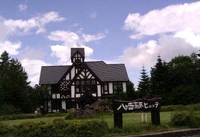
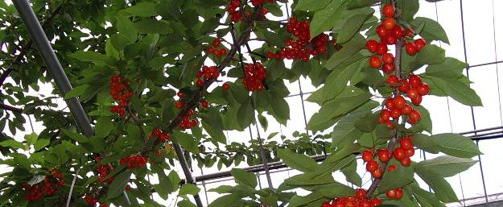

「急に一人行けなくなったから…」
と、八ヶ岳へのさくらんぼ狩りに誘われ、ケアンズから帰って１０日後のこととあって、ちょっと日にちが近すぎるなぁ…と二の足を踏んだのですが、さくらんぼ狩りはしたことがなかったので急遽参加することになりました。（＾０＾；
梅雨がまだ明けておらず、天気予報は前日から二日続きの雨マークで、しかも各地で浸水がニュースになったほどの集中豪雨のあった翌日とあって、誰もが「降る！」と信じて疑わなかったこの日のお天気ですが、連山がきれいに見えておりバスが進むに連れて山々がどんどん近づいてきます。
八ヶ岳と言うからには八つの山が連なっているとばかりに思っていたのですが、実はそうではなく南八ヶ岳と呼ばれる赤岳(2899m)・ 横岳(2829m)・阿弥陀岳(2805m)・ 硫黄岳(2760m)・権現岳(2715m)・ 編笠山(2524m) と、北八ヶ岳と呼ばれている 天狗岳(2646m)・ 蓼科山(2530m)・北横岳(2473m)・ 縞枯山(2403m)の十の山を総称しているのだそうです。
アルプス的な景観とされる南に対して、北は北欧的な景観だとも言われています。
むかし むかし…かぼちゃがまだ子育てにテンテコ舞いをしていた頃、テレビで「高原へいらっしゃい」というドラマが今は亡き田宮次郎さんの主演で放送されており、うまい具合に子供たちが寝てしまってだんなが帰ってきていなければ見られたという微妙な時間帯でしたが、それがリニューアルされて好評だったのだそうで、（05年7月から第二章も始まるようです）そのロケ地である高原ヒュッテを訪れます。

折り畳み傘なんてお荷物は座席の網ポケットに放り込んでバスを降り、ヒュッテに足を踏み入れます。
ホテルとしては流石に営業はしていませんが、ヒュッテの中はロケ当時のそのままに残されており、一階のレストランではお客さんもちらほら入ってお食事中で、お土産もいろいろ売っていました。
「ああーそうだった、そうだった」
と、リニューアル版は見たことがなかったのですが昔のメンバー達の場面が思い出されてきて、前田吟さんや尾藤イサオさんなどがそこいらからヒョコッと出てきそうな気がする展示部屋を見てまわり、ドラマの出演者たちの写真などが飾られている部屋で、黒い蝶ネクタイ姿の田宮次郎さんにも再会できました。
ヒュッテ前の芝も植木も手入れが行き届いており、ピンクの白爪草などが所々で咲いているこんなホテルがあったら是非泊まってみたいものです。
…とここまで思い出して、私の思考回路はパタッと止って行き止まりになってしまいました。
ミルクをご賞味…？
ううーむ…
行程表を睨みつけて記憶の糸を手繰り寄せようとしますが、かぼちゃの頭の中には所々空洞ができているらしく、野辺山などというところでミルクを飲んだという部分がポコッと抜け落ちてしまっているようなので、こそこそと調べに行ってみます。
野辺山高原というのは標高が1,000mから1,400mあり、夏が涼しいので乳牛を飼育するのに適している気候なのだそうで、牛乳工場を中心に７０戸あまりの酪農家が２０㎞範囲に点在しており、生産された牛乳はその日の午前中新鮮なうちに工場へ搬入されるのだとか。
…思い出せない…（＾へ＾；
八ヶ岳では高原野菜の栽培が盛んなようで、林立する木立がなくなったと思うと畑が広がっており、見るからに柔らかそうなサニーレタスなどが行儀良く並んでいるのを窓から眺めて、
「美味しそう…」
と、隣に座ったキュウリさんと畑でなにが作られているのかを見ていたのですが、レタス以外は全然判りませんでした。
お次は、そんな新鮮な野菜がサラダ・バーに集められたレストランで昼食です。
冷たく冷やされた種々の野菜は、三種類のドレッシングやマヨネーズを好みで和えるようになっており、ポテトやパスタのサラダと一緒にレストランの真ん中に据えられたバーから食べ放題となっています。
食事はフレンチコースで、ナイフやフォークが並べられた４人掛けの席に案内され、前菜が運ばれて来ましたが、レタスさんは７０を過ぎているキュウリさんが困っているのを察して、ふいっと立ち上がってお箸を貰ってきたり、サラダの取り方を教えたりとまるで母親の面倒を見るように、良く気がついて動いて回りますので、自分が食べることに精一杯で隣に座っているキュウリさんへの気配りがまったくできなかったことが恥ずかしくなりました。
焼きたてのパンがバスケットに入れて配られ、あまりの美味しさにあっという間になくなってしまい、次のパンが来るのが待ちどうしかったり、メインのステーキが柔らかくてソースも素材のうまみを殺さない程度のコクがあり、サラダも三回もおかわりをして満点の昼食でした。
１時間４０分の時間をかけた昼食を終えて、清里高原の別荘地などを横目にバスはどんどん人里を離れ、いよいよ初体験の「さくらんぼ狩り」です。
さくらんぼは雨に当たると実が割れてしまうのでネットの屋根を張るのだとテレビで見ていたような気がしますが、本当にネットでできた（もっともこれは鳥避けのようでしたが…）大きなハウスの中に桜の木がたくさん植えられており、屋根は透明のビニールだったような気がします。
ハウスに入る前に、
口の中に入れるのは存分に…ですが、
かばんの中に入れるのはご法度！
などと説明を受け、昔のお兄さんの後についてぞろぞろとハウス内に入ります。
イチゴハウスのようにひとつの入り口から奥へ進むようになっていて、隣の入り口から入れそうな区域はロープで仕切られて入れないようになっています。
所々に脚立が置いてあっておじさんたちがそれに登って高い所の実を取ってくれ、いろいろとさくらんぼの説明もしてくれます。
「食べていってよー！」
品種もいくつかあって、入り口を入るなり奥へ進みながら手当たり次第に辺りの木に手を伸ばして、あれこれと食べ進んだ私は一番甘くて美味しい木をみつけて、そこから動かなかったので他の木のものをあまり食べなかったのですが、脚立の上からさくらんぼを渡しているおじさんの説明を聞いていますと、美味しい物は後で食べるというのが上手な食べ方なのだそうで、それ以外のものが不味いというわけではなく、それぞれに違う味を楽しんでから一番甘い種類を食べるのが沢山食べられるのだそうです。
あちゃー！でございます。（＾～＾；

この時は参加していなかった人なので、サラダから離してスイカさんとお呼びしますが、このスイカさんがミニトマトを上手に沢山作りまして、季節が終わってもいろいろな色のものが実をつけ、宝石のようにきれいなのでそれをお皿に盛って座敷のテーブルに飾っておいたということを聞きましたが、このさくらんぼもまるで宝石のように光り輝いていると思いませんか？
それにしても、こんな時期にさくらんぼが食べられるなんて思ってもみなかった…と、ハウスを出てお店の人と話していると、この場所の収穫が終わってももう少し標高の高いところにあるハウスでまた食べごろになるのだそうで、もうしばらくは楽しめるということでした。
ハウスに入る前は
「たった３０分間かい！？」
と思ったのですが、そこそこに別腹を満たしたようでそれぞれに日陰になっている売店の中に戻ってきて、冷たく冷やした極上物のさくらんぼを差し出されてまたもやパクリと口に入れ、暑いハウスの中から出てきてその冷たくて甘い一粒には魔法がかけられていたかのように、台の上に並んでいたさくらんぼが売れていきます。（＾～＾
気がつけば私もいつの間にか赤い宝石の入った袋を提げていました。
バスは帰路をたどり始め、往きに通り過ぎたチーズケーキの工房へ寄り、入り口で渡された小さなドラ焼をモグモグ食べながら店内を見て周り、ここでみつけたのが長崎のハウステンボスで気に入って買ってきた物と同じ味のナチュラル・チーズで、豆腐の冷奴と同じ食べ方をメモにして購入した人に渡していました。
切り口にはラップとホイルの二段重ねで保存すると硬くならないと聞いて、お土産にいくつか購入しました。
新鮮で冷たいサラダを三度もおかわりをしてしまった私は、お腹が冷えたせいか行くべきところへ何度も足を運びましたが、
「せっかく美味しい物を食べたのになにが悲しくて…」とでも言うかのように、意思に逆らって頑固に居座っており、バスは最終の立ち寄り地であるチーズ工房を出発しました。
お腹の皮が突っ張ると瞼の皮が緩む…と言いますが、美味しい食事にたっぷり過ぎるくらいのデザートもいただいて、往きはけたたましいほどに賑やかだった車内が少し静かになり、山道を下って人里に戻ってきて高速道路に上がると、急にトイレに行きたくなり、これはもう、ガイドさんに頼んで近くのサービスエリアにバスを止めてもらわなくては、
町内の笑いものになってしまうこと間違いなし!!
と、恐怖に満ちた思いで額にじわりと浮く脂汗。
頼みの綱のガイドさんはビデオの操作に熱中しているようで姿も見えず、
「なにか、他の事を考えなくては…」
と、一点に集中している神経を散らすがごとく考えを巡らせますが、心のどこかで
「なんで、ビデオにそんなに時間がかかるのよぉー」
ガイドさんに八つ当たり。
やっと始まった「釣りバカ日誌」に目だけを向けて、気持ちはあらぬ方向で【危険】を知らせる半鐘ががんがんと鳴り響き、
あろうことか私はそのまま寝てしまったのです。
バスがトイレ休憩のために減速を始めた頃にふっと目を覚まして、
はっ！
と、気がついてみるとあんなに焦っていたのが夢のように平常に戻っています。
もしかして…
そんな心配もしないではなかったのですが、通路に並んでいる人をかき分けて恥も外聞もなくバスを飛び出すような行いをすることもなく、無事ことなきを得ました。（A＾＾;;
それからの私はというと、勿論何事もなかったように「釣りバカ日誌」を見ながらゲラゲラと大口を開けて笑い、キュウリさんの睡眠妨害をしていたこと間違いなし。